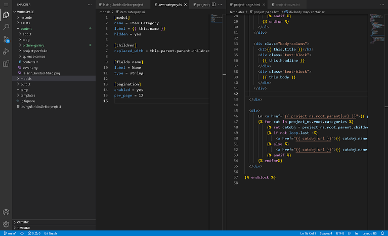

Vision general de proyecto y de sus componentes principales.
La pagina web de lasingularidad.es es uno más de nuestros proyectos. La diseñamos como una herramienta para documentar y dar a conocer nuestras creaciones y como tal tenia que cumplir una serie de condiciones:
Para conseguir alojamiento gratuito tenemos dos alternativas: alojar la web en nuestro propio sevidor, en casa; o usar un servicio del estilo de GitHub Pages.
El alojamiento casero es más fexible, pero claro, supone exponer una parte de nuestra red local a la marabunta de internet; que luego no duerme uno tranquilo. Y también que se va a caer la página web si se va la luz o hay que reiniciar el router. Que tampoco es que vayamos a necesitar una disponibilidad loquisima, pero ahí queda.
Con GitHub Pages tienes basicamente un repositorio git al que subes los ficheros de la web. Puedes acceder al repositorio desde una URL y la web en sí desde otra. La pega es que solo funciona para páginas estáticas. Como queremos una página relativamente sencilla y no necesitamos hacer ningún cálculo en el servidor, esto a nosotros nos da igual. Total, que nos quedamos con esta opción.
Como generador de la página nos hemos decantado por Lektor. Hay un monton de generadores de webs estáticas ahí fuera. GitHub Pages recomienda Jekyll y es lo tiene perfectamente integrado, pero no es muy amigable para el usuario. Basicamente hay que trabajar directamente con ficheros de texto y eso supone que hay que acordarse de las etiquetas que hay que añadir en la cabecera de cada fichero.
En mi experiencia eso se traduce en que cada vez que vas a crear una pagina tienes que volverte a leer la documentación, si es que te acuerdas de donde estaba. Es verdad que tiene un plugin que genera una interfaz gráfica, pero la interfaz es muy rigida y no me parece adecuada para gestionar distintos tipos de páginas.
Lektor, por su parte, tiene la interfaz gráfica integrada, pensada como la forma principal de crear contenido. Para cada tipo de página que vayamos a necesitar nos permite definir los campos que apareceran en la interfaz. Así el usuario solo tiene que ir rellenando cada campo con los datos que correspondan.
En la imagen de arriba tenemos la interfaz para la pagina de portada de este proyecto. Se pueden ver los campos "Title", "Order", "Abstract", etc. Lektor usa el contenido de estos campos para componer la página.
Otra cosa que me gusta es la estructura de proyectos de Lektor, que me resulta muy intuitiva. Cada página es un directorio que contiene todos los ficheros con el contenido de la página. Y cada sub-pagina es un subdirectorio.
Una desventaja es que la documentación de Lektor es un poco límitada. Hay algún concepto al que le vendría bien contar con algún ejemplo, y la comunidad no es muy grande comparada con la de Jekyll, pero está escrito en Python, que es mi lenguaje de programación de trabajo, así que en caso de dudo puedo echar un vistazo a las fuentes a ver que está pasando.
La gestión de un sitio con Lektor se realiza a dos niveles:
A nivel "usuario" tenemos la interfaz de administración que nos permite añadir, editar o borrar paginas y gestionar el contenido en general. Esta interfaz la proporciona el propio Lektor cuando lo ejecutamos con el subcomando server.
A nivel de "desarrollador" tenemos que definir el tipo de páginas que puede contener nuestro sitio, los campos de datos necesarios para cada tipo de página y las plantillas que se usan para generar el código HTML de la página a partir de dichos datos. Todo esto se especifica mediante una serie de ficheros de texto organizados en una estructura de directorios concreta. Para trabajar con estos ficheros necesitamos un editor de textos.
Pues bien, para trabajar uno solo puedes lanzar tu lektor server en local y usar el editor de texto que más rabia te de. Incluso para un equipo de desarrolladores, puede tener sentido usar un repositorio git para mantener los ficheros sincronizados entre todos y que cada uno use su propio servidor local. Pero a un usuario que "solo" quiere gestionar el contenido no puedes pedirle que se instale y aprenda a usar git y lance su propio servidor.
Al final lo que hemos hecho es montar un servidor central al que podemos conectarnos desde cualquier ordenador de nuestra LAN. Todos los ficheros del sitio están alojados en dicho servidor, así que no hay que preocuparse de mantener la sincronización entre distintos ordenadores.
Para la interfaz de administración tenemos un contenedor de Docker que ejecuta lektor server. Y para el desarrollo tenemos otro contenedor corriendo code-server, que es una versión web de VS Code, con lo que podemos editar los ficheros de texto directamente.

Con esto cualquiera que esté conectado a nuestra red local puede trabajar en el sitio web sin necesidad de instalarse ninguna herramienta adicional.